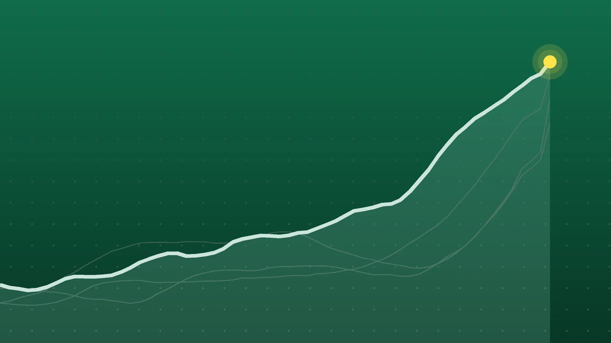

SportsExplainer
Sports Scores, Oct. 26: Brewers Rout Rays to Take 3-0 Lead
Milwaukee is one win from its first championship after an eight-run inning, Dallas sent Philadelphia to a fifth straight loss, and Holger Rune won a tour match for the first time in 373 days.

Quick take
- Milwaukee beat Tampa Bay 10-1 in World Series Game 3, scoring eight runs in the fifth inning, and leads the series 3-0.
- Dallas beat Philadelphia 38-21 on Monday Night Football as Javonte Williams ran for a career-high 155 yards; the Eagles are 2-5.
- Substitutes Senny Mayulu and Mika Godts scored as PSG beat Lyon 2-0 to go top of Ligue 1 by one point; Sevilla beat Osasuna 2-0 in La Liga.
- Holger Rune beat Quentin Halys in Basel for his first tour-level win in 373 days, and Anna Bondar knocked out Guangzhou’s top seed.
Why it's trending Monday, Oct. 26, brought World Series Game 3, the NFL’s Monday night game, PSG vs. Lyon, a La Liga match and the first round of four tennis tournaments.
Other sports results for Oct. 26
The Milwaukee Brewers are one win from the first World Series title in franchise history. They beat the Tampa Bay Rays 10-1 in Game 3 at Tropicana Field on the strength of an eight-run fifth inning and lead the series 3-0, Yahoo Sports reported.
In Philadelphia, Dallas pulled away late to beat the Eagles 38-21 on Monday Night Football, handing Philadelphia a fifth straight loss. In Paris, two second-half substitutes gave PSG a 2-0 win over Lyon and first place in Ligue 1. The NBA and NHL have their own roundups: see NBA scores for Oct. 26 and NHL scores for Oct. 26.
MLB, NFL and soccer
| League | Winner | Score | Loser | Note |
|---|---|---|---|---|
| MLB (World Series Game 3) | Milwaukee Brewers | 10-1 | Tampa Bay Rays | Eight-run fifth; Gasser six scoreless innings; Brewers lead 3-0 |
| NFL | Dallas Cowboys | 38-21 | Philadelphia Eagles | Javonte Williams 155 yards; Prescott 3 TD passes |
| Ligue 1 | Paris Saint-Germain | 2-0 | Lyon | Mayulu 72’, Godts 84’, both off the bench |
| La Liga | Sevilla | 2-0 | Osasuna | Isaac Romero 24’, Félix Correia 82’ |
ATP tennis
Basel (first round), per the ATP Tour’s results page:
| Winner | Score | Loser |
|---|---|---|
| Holger Rune | 6-4, 6-7 (2), 7-6 (5) | Quentin Halys |
| Casper Ruud (9) | 4-6, 7-5, 6-3 | Dominic Stricker (WC) |
| Daniel Altmaier (LL) | 6-7 (5), 7-6 (4), 6-4 | Juan Manuel Cerúndolo (Q) |
| Nuno Borges | 6-3, 6-1 | Mika Brunold (LL) |
| Valentin Vacherot | 6-3, 7-6 (4) | Mariano Navone |
Vienna (first round), per the ATP Tour and Eurosport:
| Winner | Score | Loser |
|---|---|---|
| Alex de Minaur (5) | 1-6, 6-4, 6-3 | Tomas Machac (Q) |
| Jakub Mensik (8) | 6-2, 6-2 | Lukas Neumayer (Q) |
| Matteo Berrettini | 6-3, 6-4 | Tomas Martin Etcheverry |
| Luciano Darderi | 7-5, 6-2 | Matteo Arnaldi |
| Arthur Fery | 5-1, retired | Jacob Fearnley (Q) |
| Learner Tien | 6-3, 6-1 | Luca Van Assche |
WTA tennis
Tokyo (first round), per Field Level Media:
| Winner | Score | Loser |
|---|---|---|
| Alexandra Eala (8) | 6-1, 6-2 | Mika Stojsavljevic |
| Talia Gibson | 6-0, 7-5 | Daria Kasatkina |
| Elise Mertens (5) | 6-4, 6-2 | Moyuka Uchijima |
| Alycia Parks | 6-1, 7-6 (7) | Wang Xinyu |
Guangzhou (first round), per Field Level Media:
| Winner | Score | Loser |
|---|---|---|
| Anna Bondar | 6-4, 6-2 | Daria Snigur (1) |
| Paula Badosa (5) | 6-1, 6-4 | Carol Young Suh Lee |
| Maria Timofeeva (7) | 6-4, 6-1 | Teodora Kostovic |
Harriet Dart, Sinja Kraus and Shi Han also won first-round matches in Guangzhou; full scores weren’t available in the sources reviewed.
Brewers 10, Rays 1: a challenge that changed the inning
Milwaukee led 2-0 in the fifth when a grounder by William Contreras looked like an inning-ending force-out at second. The Brewers challenged, the call was overturned, and the bases stayed loaded, Bleacher Report reported. What followed was seven straight two-out hits, which Yahoo Sports called a postseason first. Reliever Cam Booser faced four batters without getting an out. Robert Gasser threw six scoreless innings and allowed one hit, and Jackson Chourio went 4 for 5. Tampa Bay’s only run came on Yandy Díaz’s double in the ninth off Brandon Woodruff, who was pitching for the first time since a shoulder injury in July. For background on the matchup, see our World Series explainer.
Cowboys 38, Eagles 21: Williams wears them down
Philadelphia took a 21-20 lead early in the fourth quarter on Makai Lemon’s first career touchdown. Dallas answered with a CeeDee Lamb touchdown and a Dak Prescott two-point run, then added a Brandon Aubrey field goal and a 2-yard Javonte Williams score after the Eagles failed on fourth-and-9, the Cowboys’ recap said. Williams finished with 155 yards on 25 carries, a career high. Prescott threw three touchdown passes, two to Lamb. The Eagles are playing without Jalen Hurts, who is out for the season, with Tanner McKee starting, NBC 5 noted.
PSG 2, Lyon 0: the bench decides it
The match was scoreless until the 72nd minute, when Senny Mayulu scored seven minutes after coming on, set up by Mika Godts, Foot Sur 7 reported. Godts, also a substitute, added his first PSG goal in the 84th minute. PSG played without Ousmane Dembélé, Khvicha Kvaratskhelia and Marquinhos. Lyon, which started the day in first place, dropped to fifth, KarloBag reported.
Rune’s return
Holger Rune needed 2 hours, 39 minutes to get past Quentin Halys, who hit 32 aces, but the win was his first at tour level in 373 days, since an Achilles injury in October 2025, Tennis Majors reported. In Vienna, Alex de Minaur trailed Tomas Machac by a set and 4-2 before winning, the ATP Tour said. In Tokyo, defending champion Belinda Bencic withdrew with a right ankle injury, Just Women’s Sports reported.
What it means
- World Series: Milwaukee needs one win in up to four games. Yahoo Sports notes the Brewers are 10-1 this postseason, and a sweep would make them the first team to sweep both a league championship series and the World Series. Games 4 and 5 are at Tropicana Field; Games 6 and 7, if needed, would be in Milwaukee.
- NFC East: Dallas (3-4) moved ahead of Philadelphia (2-5), the Eagles’ recap noted. The Cowboys are one win from .500.
- Ligue 1: PSG have 17 points after eight matches, one ahead of Rennes, Paris Fans reported, and two ahead of Lille and Monaco, per Foot Sur 7. Lyon sit fifth on 14, three points off the top.
- La Liga: Sevilla moved to sixth on 17 points; Osasuna are 12th on 11, La Nación reported.
- ATP Finals race: de Minaur’s win matters for Turin; the ATP Tour says he is 10th in the live race.
What’s next
Tuesday, Oct. 27, all times ET:
- World Series: Game 4 starts at 8 p.m. in St. Petersburg, with Milwaukee trying to finish a sweep. Griffin Jax starts for Tampa Bay; Milwaukee hadn’t named a starter, per MLB.com.
- Serie A: league leaders Lazio visit Sassuolo at 1:30 p.m.; Roma host Cagliari and Torino host Como at 3:45 p.m., per Il Fatto Quotidiano’s schedule.
- Tennis: first-round play continues in Basel, Vienna, Tokyo and Guangzhou. Learner Tien faces de Minaur next in Vienna.
Sources
- Yahoo Sports World Series 2026: Brewers on cusp of first title after dismantling Rays in historic rally to take 3-0 leadOct. 27, 2026
- Baseball-Reference 2026 World Series Game 3, Milwaukee Brewers vs Tampa Bay Rays: October 26, 2026Oct. 26, 2026
- Bleacher Report Brewers Beat Rays with Historic Rally, Box Score Stats, Highlights from 2026 MLB World Series Game 3Oct. 26, 2026
- MLB.com Brewers-Rays World Series Game 4 FAQ (8 ET, FOX/FOX One)Oct. 27, 2026
- Philadelphia Eagles Game Recap: Cowboys 38, Eagles 21Oct. 27, 2026
- Dallas Cowboys Game Recap: Cowboys run over Eagles, 38-21Oct. 26, 2026
- NBC 5 Dallas-Fort Worth Winners, losers as Cowboys capitalize vs. Eagles on Monday Night FootballOct. 26, 2026
- Paris Fans PSG vs. Lyon – The bench delivers the win and top spot: the hits and the misses!Oct. 27, 2026
- Foot Sur 7 PSG-Lyon : les notes, Godts et Mayulu offrent la tête au PSGOct. 26, 2026
- KarloBag.eu PSG vs Lyon 2-0 at Parc des Princes: late goals from Mayulu and Godts and a rise to the top of Ligue 1Oct. 27, 2026
- Il Fatto Quotidiano Calendario Serie A, oggi parte il turno infrasettimanale: in campo Roma, Lazio e ComoOct. 27, 2026
- ATP Tour Rune survives Halys' 32 aces for opening Basel win, records first ATP Tour win since injuryOct. 26, 2026
- La Nación Sevilla venció 2-0 a Osasuna, por la Liga de EspañaOct. 26, 2026
- El Periódico de Ceuta Resultados de LaLiga, jornada 10: del 23 al 26 de octubreOct. 26, 2026
- ATP Tour Basel resultsOct. 27, 2026
- ATP Tour Vienna resultsOct. 27, 2026
- Tennis Majors 373 days after his Achilles injury, Rune edges Halys in Basel for first ATP winOct. 26, 2026
- ATP Tour Alex de Minaur weathers Tomas Machac's Vienna whirlwind for crucial R1 winOct. 26, 2026
- Eurosport France ATP 500 Vienne - Luca Van Assche trop court pour bousculer Learner Tien au premier tour (6-3, 6-1)Oct. 26, 2026
- Field Level Media WTA roundup: Anna Bondar ousts top seed in GuangzhouOct. 26, 2026
- Just Women's Sports Alexandra Eala Cruises Past Mika Stojsavljević in Tokyo OpenerOct. 26, 2026
Keep reading

Sports Scores, Oct. 24: Brewers Rally for 2-0 World Series Lead
Sports scores for Oct. 24, 2026: Brewers 5, Rays 4 in World Series Game 2, India’s last-over T20I win, Lens over Paris FC and 10 tennis semifinals.

Sports Scores, Oct. 25: Antonelli Wins U.S. GP, Inter Go Top
Sports scores for Oct. 25, 2026: Antonelli wins the U.S. Grand Prix, Shadab Khan’s 113 beats England, plus Serie A, Bundesliga, Ligue 1 and five tennis finals.

Sports Scores, Oct. 23: Brewers Win World Series Game 1, 3-2
Sports scores for Oct. 23, 2026: Brewers 3, Rays 2 in World Series Game 1, plus two NHL games, five European soccer leagues, cricket and 20 tennis results.